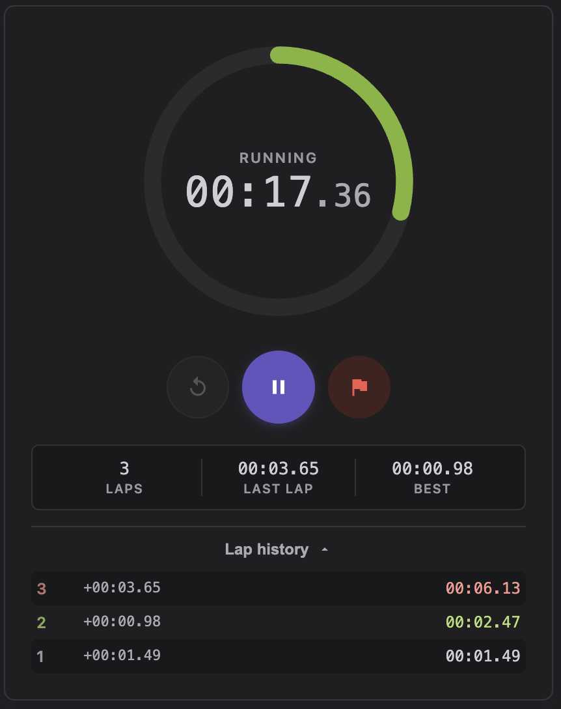
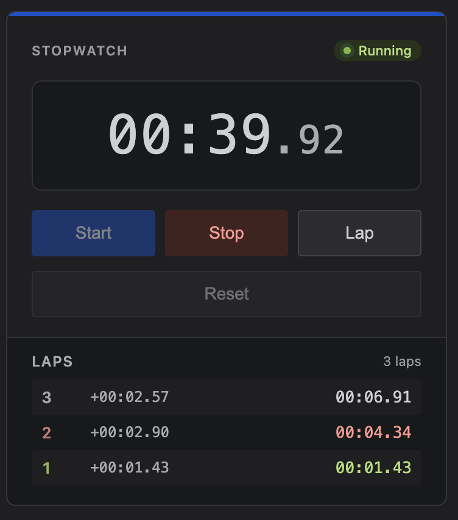
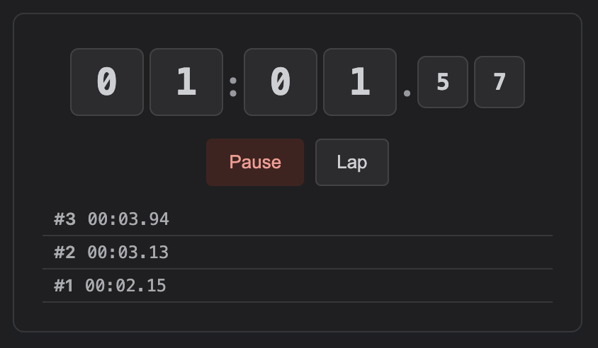

Ring style

Classic style

Flip style

How to Use
- Type
/Stopwatchin the editor - Choose style: Ring, Classic, or Flip
- Click Save — interactive start/stop/reset on the page
Styles
Ring
Circular progress indicator
Classic
Traditional digital display
Flip
Flip-card animation
Technical Details
| Storage | Macro config |
| External Service | None |
| Editor | Large config panel |
| Availability | Lite & Full |